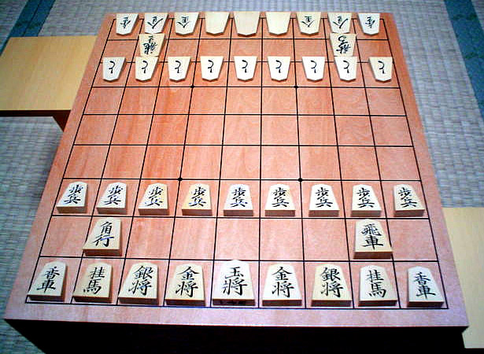
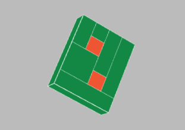
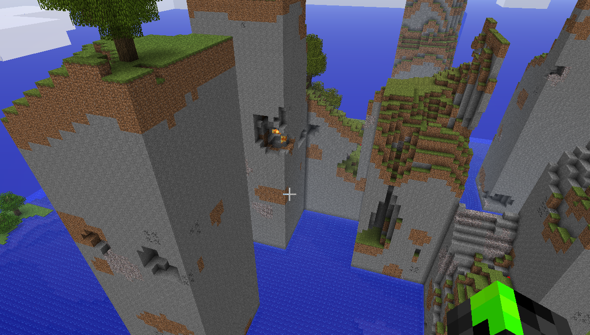

Voxels in V8
To start, click and allow pointer lock.
Slides thataway! →
Andy Hall
2015.7.16
Using this presentation:
move around:
invert mouse:
destroy block:
place block:
pick block:
camera zoom:
jump:
jet pack:
pause:
WASD, arrows
I
LMB, tap
E, RMB
Q, middle mouse
F, scroll
space
R
P
(mobile users: sorry lol)
About me:

@fenomas
free gamedev, sometime technical evangelist
github/fenomas
aphall.com
Voxels - definition
tl;dr:
Ever seen Minecraft?
Yeah those.
Voxels - proper definition
Colloquially, if pixels represent
the rasterization of 2D data,
voxels are the 3D equivalent.
(Hence "voxel": volumetric pixel)

Conceptually, voxels are a sampling over some 3D space,
just as pixels in a bitmap are samples of
some 2D data (vector graphics, photos, etc).
(Note: click this block for the
amazing webGL demo
I stole that image from)
Note: nothing (per se) to do with gaming!

(CT scan data)
Voxels and Gaming

Comanche, 1992
(Click: list of games with voxels)
Voxel advantages

Provides game with easily grasped structure -
Equivalent to grids in 2D games
Conceptually easy to work with
- Technical tradeoffs (e.g. CPU vs memory)
largely similar to vectors/bitmaps
- Some hard things become easy
(raycasting, collision tests..)
- (Of course some easy things become hard..)
Voxel advantages
Mutable worlds for free! (ish)
(click: anywhere but here, yo)
World-affecting game rules

c.f. "Emergent gameplay"
Note:
"3" to place a Conway Block
"4" to stop/start simulation
(click: explanation)
Note: not just for rendering!
Voxels are often useful behind the scenes
regardless of how a game looks
(e.g. for physics simulation).
Conceptually: 3D games should use voxels wherever
a 2D game would use a grid.
Rendering Voxels
In general a conversion step ("meshing")
is necessary to convert voxels into
stuff that GPUs understand
(vertex lists, normals, etc).
Here are three approaches:
Naive Meshing

(click: mrdoob's voxel demo)
Create one cubic mesh per voxel
Problems: poly counts, draw calls
Culled Meshing

Merge voxels into one large mesh,
omitting faces between adjacent voxels.
Result: fewer draw calls, still a lot of polys
"Greedy Meshing"

Scan across voxel slices, merging faces of
adjacent voxels (of the same value).
Credit: all-around genius
Mikola Lysenko
(click: algo explanation + live demo)
Chunking

Necessary tradeoff for large worlds:
faster meshing, more draw calls.
Minecraft chunks: 16x16x256 (divided vertically)
This demo: arbitrary (32x32x32 at the moment)
Ambient Occlusion

Comparatively simple for voxels,
and greatly improves visuals
Click: toggle AO in this demo
(then place a block to trigger meshing)
Note: Voxels needn't be blocks!
Voxel Quest
(click: it's beautiful)
CT scan data
(google "marching squares")
World generation
Driven deterministically by
noise (Perlin, simplex) and hashing.
In this demo:
2D noise: height map
3D noise: clouds
Hashing: tree/flower placement
(click: my homemade n-dimensional hash!)
Other world algorithms
Many voxel algos extend naturally from
2D cases (often heavily researched).
- Collision tests: simple grid check
- Raycasting: equivalent to line rasterization (e.g. Bresenham)
- Physics: had to roll my own, but easier than 3D
noa (this engine)
And how I built it
Dev stack:
node | npm | browserify | beefy
(this slide is out of date,
I use webpack now..)
Why roll a new engine?
I started trying to use
voxel.js
Pros:
Tons of great code
Extremely modular
Cons:
Massively coupled
Dependency hell
Renders on bare metal
noa's approach:
- Reuse code from voxel.js where feasible
(raycasting, meshing..)
- Otherwise written from scratch
(physics, rendering, controls, AO..)
- Babylon.js for rendering (click)
State of the project
- Works(?), performant(?)
- No docs, all APIs in flux
- Features: see testbed app (click)
- Collaboration welcome, drop me a mail/issue/etc
"Is [HTML/JS] really [ready/fast enough] for gaming yet?"
My thoughts after 5 months:
Mainly depends on how broad your scope is
- Targeting one version of one browser makes for an easy life ;)
- Modern JS is a solid dev platform, if you modularize responsibly
- The more you use the DOM, the more performance will vary across browsers
- Mobile: what's that? Does it taste good?
Performance in V8
- V8 is very fast, but temperamental
- Getting great performance is still ~50% black magic
Key takeaway #1:
- Don't waste time guessing what will perform well in V8 - it can't be done
- Master the dev tools instead
- Profile
Key takeaway #2:
- Deopts murder performance!
- They can occur unpredictably, and for bizarre reasons.
- When all else fails:
chrome --js-flags = "--trace-deopt"
Thanks!
@fenomas
github.com/fenomas